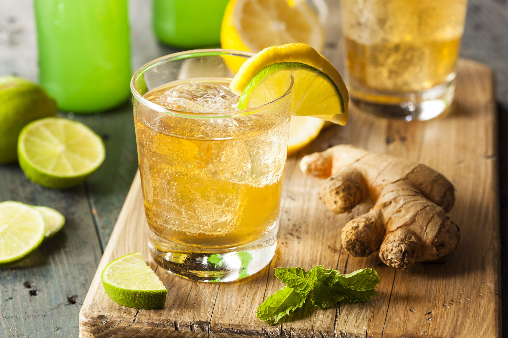

Ginger beer is made by first propogating the natural yeast that lives on the skin of the ginger. By mixing diced ginger with sugar in water and adding more ginger and sugar for 3-5 days you create what is called a ginger bug. This ginger bug is full of natural yeast that will ferment and carbonate the ginger beer. Combine your raw ginger beer that has fully cooled with a potion of ginger bug and bottle allowing for the desired level of carbonation and fermentation.